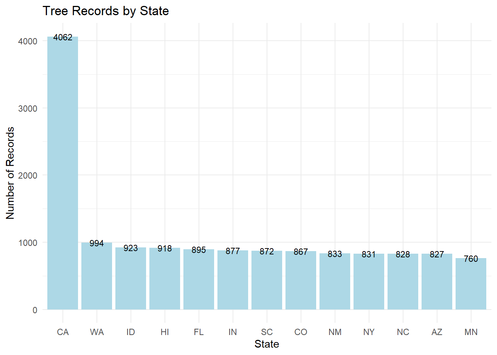

── Attaching core tidyverse packages ──────────────────────── tidyverse 2.0.0 ──
✔ dplyr 1.1.4 ✔ readr 2.1.6
✔ forcats 1.0.1 ✔ stringr 1.6.0
✔ ggplot2 4.0.2 ✔ tibble 3.3.0
✔ lubridate 1.9.4 ✔ tidyr 1.3.2
✔ purrr 1.2.0
── Conflicts ────────────────────────────────────────── tidyverse_conflicts() ──
✖ dplyr::filter() masks stats::filter()
✖ dplyr::lag() masks stats::lag()
ℹ Use the conflicted package (<http://conflicted.r-lib.org/>) to force all conflicts to become errors
#setwd("C:/Users/19107/Documents/PLAN372/homework/homework6/homework-6-jenyu2005") #comment this out latertrees <-read_csv("TS3_Raw_tree_data.csv") #read csv file
Rows: 14487 Columns: 41
── Column specification ────────────────────────────────────────────────────────
Delimiter: ","
chr (15): Region, City, Source, Zone, Park/Street, SpCode, ScientificName, C...
dbl (25): DbaseID, cell, Age, DBH (cm), TreeHt (m), CrnBase, CrnHt (m), Cdia...
num (1): TreeID
ℹ Use `spec()` to retrieve the full column specification for this data.
ℹ Specify the column types or set `show_col_types = FALSE` to quiet this message.
Question 1: Sample sizes by State
trees <- trees %>%#extract city name and abbreviate state name mutate(city_name =str_extract(City, "^[^,]+"), #extract everything before the comma (city name)state_abbr =str_extract(City, "[:upper:]{2}$") #extract 2 uppercase letters at the end (state abbreviation) )#Count the records per statestate_counts <- trees %>%count(state_abbr, name ="n_records") %>%arrange(desc(n_records)) #sort from high to low (descending order)print(state_counts) #print table
# A tibble: 13 × 2
state_abbr n_records
<chr> <int>
1 CA 4062
2 WA 994
3 ID 923
4 HI 918
5 FL 895
6 IN 877
7 SC 872
8 CO 867
9 NM 833
10 NY 831
11 NC 828
12 AZ 827
13 MN 760
ggplot(state_counts, aes(x =reorder(state_abbr, -n_records), y = n_records)) +#make ggplot or bar chart and order it (states) from most to least records on x axis geom_col(fill ="lightblue") +geom_text(aes(label = n_records), size =3) +labs(title ="Tree Records by State", #titlex ="State", #x axis y ="Number of Records") +#y axistheme_minimal()

Answer: The bar plot code above shows the number of records in each state. The dataset contains records from 13 states. California has the most records with 4062. The next state with the most records is Washington with 994. The following states are closer in size. They are close to the number of records that Washington has. For example, Idaho has 923, Hawaii has 918, Florida has 895, and etc.
Question 2: Cities in NC and SC
nc_sc <- trees %>%#filter to NC and SCfilter(state_abbr =="NC"| state_abbr =="SC") #filter trees to only NC and SCnc_sc %>%#find diff cities distinct(city_name, state_abbr) %>%arrange(state_abbr)
# A tibble: 2 × 2
city_name state_abbr
<chr> <chr>
1 Charlotte NC
2 Charleston SC
Answer: The data was collected from two cities in North Carolina and South Carolina. One is Charlotte, NC, and the other is Charleston, SC.
Question 3: Genera and Species
nc_sc <- nc_sc %>%#extract the first word of ScientificName as the genusrename(avg_cdia =`AvgCdia (m)`) %>%mutate(genus =str_extract(ScientificName, "^[^ ]+"))crown_genus <- nc_sc %>%#group by genus group_by(genus) %>%summarise(avg_crown =mean(avg_cdia, na.rm =TRUE)) %>%#calculate and summarize the crown diameter for each genus and ignore values that have NA in themarrange(desc(avg_crown)) #sort from largest to smallest average crown diameter (descending order)print(crown_genus) #print results
Answer: The genus with the largest average crown diameter in NC and SC is Quercus. It has an average crown diameter of 13.6 meters.
Question 4: Tree Age
age_genus <- nc_sc %>%#group by genus group_by(genus) %>%summarise(avg_age =mean(Age, na.rm =TRUE)) %>%#calculate and summarize average age for each genus and ignore all values that have NA in themarrange(desc(avg_age)) #sort from oldest to youngest average age (descending order)print(age_genus) #print results
Answer: Yes, there are differences in average age across different genera of trees in the dataset. Quercus trees are the oldest, which average at 35.6 years. This is older than most of the other genera. This is why Quercus has the largest crown diameter.
Question 5: AI Usage
Answer: For this assignment, I used the two Quarto documents from in class materials or files on Canvas for writing expressions and working with str_extract functions. I also used AI to help with specific parts of the code I was unsure about and had the same errors for a while. I specifically used AI for (x = reorder(state_abbr, -n_records), y = n_records)) +) code to use for the ggplot bar chart for Question 1. I knew I had to use n_records, but for some reason when I tried to plot it, the bar chart looked messed up. I think it was because of the reorder function. Also in question 3, I used AI for the expression 1+ to extract the genus from the scientific name. I was unsure which symbols to use to match the first word. I know I had to use ^. I was missing the [^] inside the brackets. I thought one ^ would have been sufficient. Overall, AI was helpful for filling in the specific or unknown gaps I had.